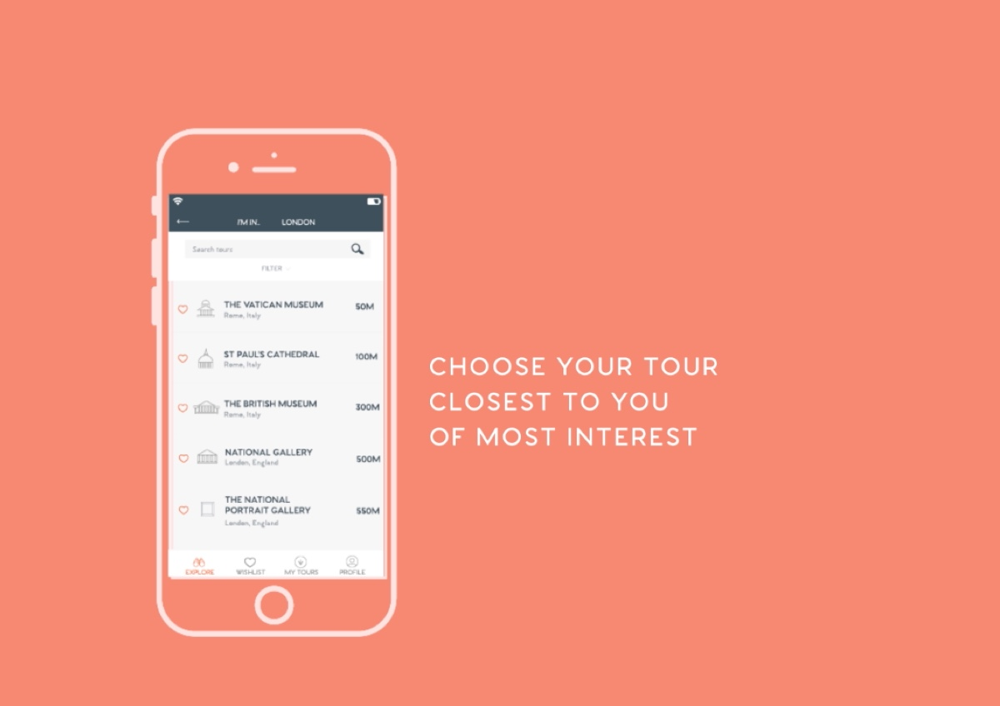

Moving Image
Art direction and illustration
This animation was produced in conjuction with the Popguide app for the means of promotion. It shows the user several life situations where the use of the app would ease their experience of being a tourist in a foreign city.
On this project I created the graphics in illustrator and worked with an animator to art direct each screen.
